.png)
Curiosidades da Copa do Mundo

1. Brasil, o único
O Brasil é a única seleção que participou de todas as edições da Copa do Mundo desde a sua criação, em 1930.
2. O primeiro gol
O autor do primeiro gol da história das Copas foi o francês Lucien Laurent, na partida entre França e México, em 1930.
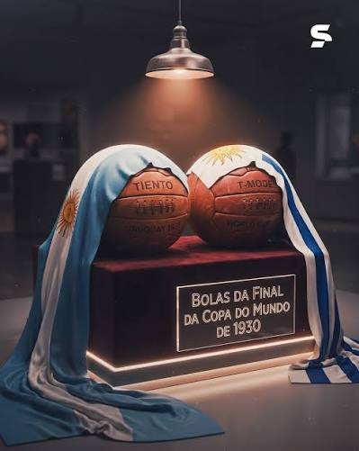
3. Final com duas bolas
Na final da primeira Copa, Argentina e Uruguai utilizaram bolas diferentes em cada tempo da partida.
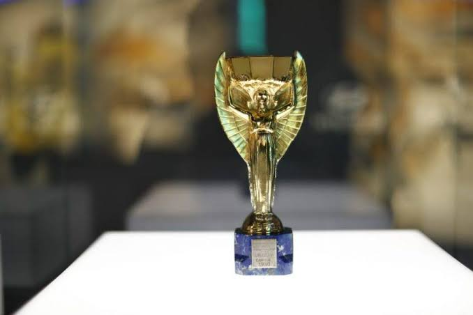
4. Taça escondida
Durante a Segunda Guerra Mundial, a taça original foi escondida dentro de uma caixa de sapatos para protegê-la.
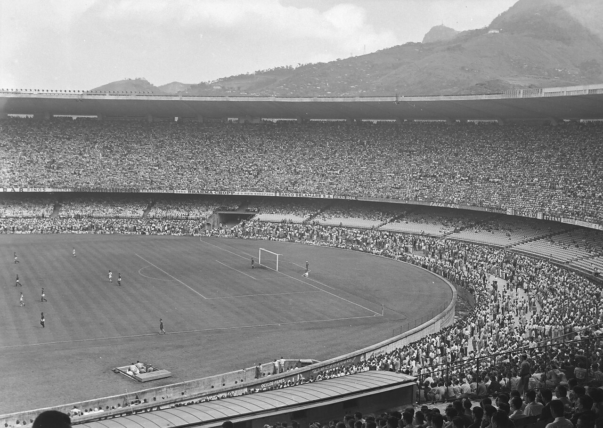
5. Público recorde
O maior público da história das Copas ocorreu no Maracanazo, em 1950, com cerca de 200 mil espectadores.
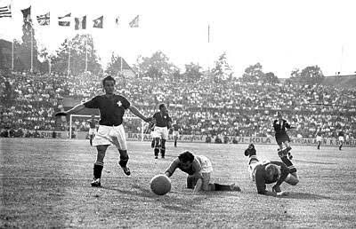
6. Jogo com mais gols
Áustria 7 x 5 Suíça, em 1954, é a partida com mais gols da história das Copas, com 12 gols.
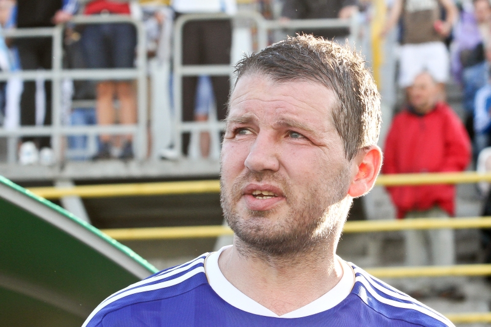
7. Recorde de gols em um jogo
Oleg Salenko marcou cinco gols contra Camarões na Copa de 1994.
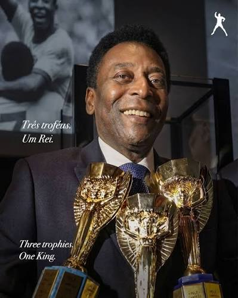
8. Rei Pelé
Pelé é o único jogador tricampeão mundial e também o mais jovem a marcar em Copas.
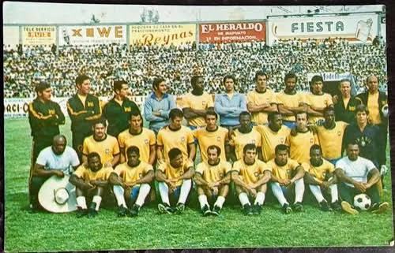
9. Substituições e cartões
A Copa de 1970 foi a primeira a permitir substituições e utilizar cartões amarelos e vermelhos.
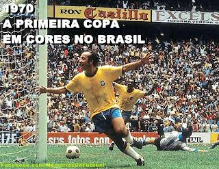
10. Copa a cores
Também em 1970, o mundo assistiu pela primeira vez a uma Copa transmitida em TV a cores.
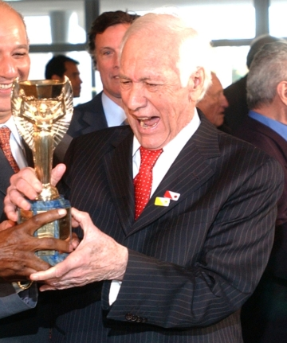
11. Gesto icônico
Bellini foi o primeiro capitão a erguer a taça acima da cabeça em 1958.
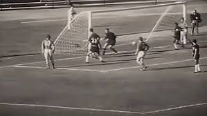
12. Gol de escanteio
Marcos Coll marcou o único gol olímpico da história das Copas em 1962.
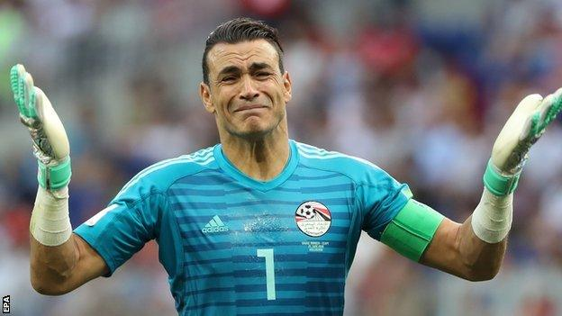
13. Jogador mais velho
Essam El Hadary é o jogador mais velho a disputar uma partida de Copa do Mundo, com 45 anos e 161 dias.
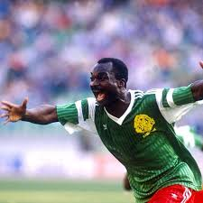
14. Roger Milla
Roger Milla é o jogador mais velho a marcar um gol em uma Copa do Mundo, com 42 anos e 39 dias.
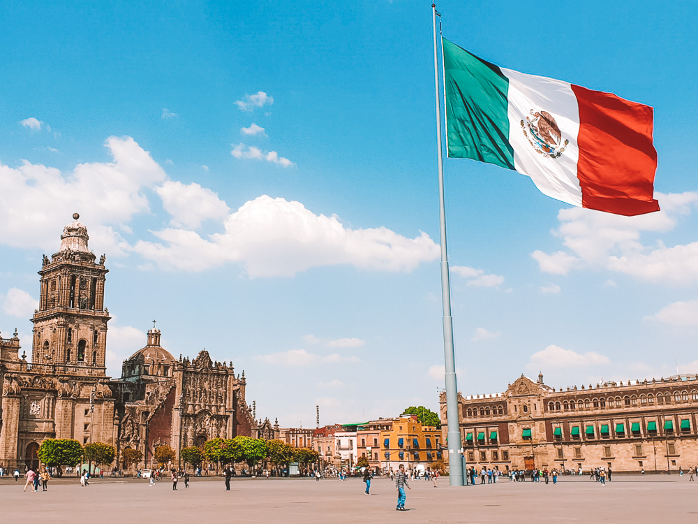
15. País sede recordista
Com a edição de 2026, o México será o primeiro país a sediar três Copas do Mundo.